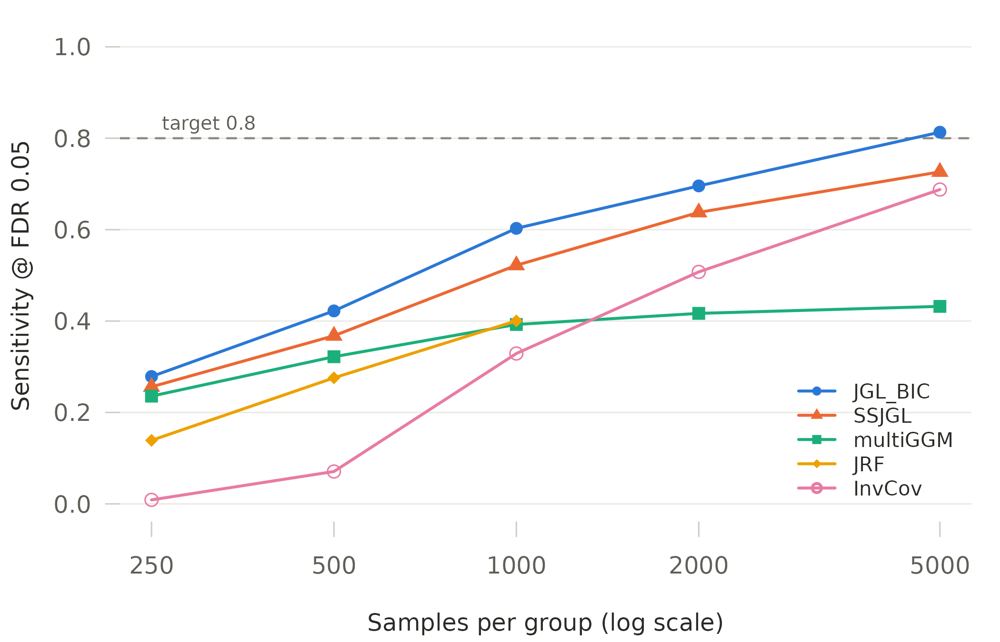
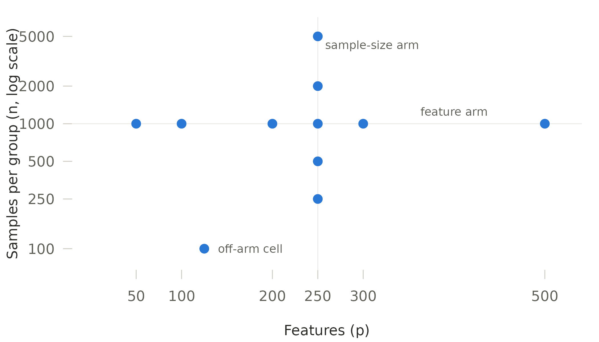

The question
Differential network analysis compares two groups (say, cases and controls) and asks which edges in a Gaussian graphical model differ between them. howbig answers the planning question that comes first: how many samples do I need to find those edges?
What “power” means here
In a differential network, almost every possible edge is not differential. With 500 features there are about 125,000 feature pairs, and in the simulations behind howbig only around 50 of them differ. A method that calls nothing differential still has a false positive rate near zero, so FPR-based summaries say little.
howbig defines power as sensitivity: the fraction of truly differential edges a method detects while controlling the false discovery rate (FDR) at a target, 5% by default. It always reports the FDR the method actually achieved next to it, because not every method controls FDR in every setting.
What you need to know
| Input | Argument | Typical knowledge |
|---|---|---|
| Number of features | p |
Usually known approximately |
| Samples per group | n |
A budget range |
| Kind of change | perturbation |
"structural" (edges appear/disappear),
"magnitude" (strengths change), or "both"
|
| FDR target | fdr |
0.05 by default |
| Method | method |
The method you plan to use |
unique(howbig_coverage()$method)
#> [1] "InvCov" "JGL_BIC" "JGL_BIC_GGL" "JRF" "multiGGM"
#> [6] "SSJGL" "SSJGL_GGL"JGL_* is the joint graphical lasso (_GGL =
group penalty, otherwise fused), SSJGL_* its spike-and-slab
version, multiGGM a Bayesian joint GGM, JRF
joint random forests, and InvCov an unregularized baseline.
All were tuned the way they were in the simulation study; see the methodology article.
Power for a design
power_for(p = 250, n = 1000, method = "JGL_BIC")
#> howbig power estimate [in-grid]
#> JGL_BIC | structural perturbation | p = 250, n = 1000
#> Sensitivity @ FDR 0.05: 0.60 (80% band 0.50–0.70)
#> Achieved FDR: 0.059 ✓
#> AUPR (threshold-free): 0.68
#> based on 100 repsThe output reads:
- Sensitivity @ FDR 0.05: mean power across simulated replicates, with the 10th-90th percentile band. The band shows how much power varies from one network to another, not uncertainty in the mean.
- Achieved FDR: the false discovery rate the method actually reached; ✓ when within twice the target, ⚠ otherwise.
- AUPR: area under the precision-recall curve for the method’s ranking of edges, a threshold-free measure of how well it separates differential edges from the rest.
Calibration is part of the answer
Change the kind of signal to a pure strength change and the same method misses its FDR target badly. Its sensitivity looks respectable, but almost a quarter of what it calls differential is not:
power_for(p = 250, n = 1000, method = "JGL_BIC", perturbation = "magnitude")
#> howbig power estimate [in-grid]
#> JGL_BIC | magnitude perturbation | p = 250, n = 1000
#> Sensitivity @ FDR 0.05: 0.52 (80% band 0.33–0.71)
#> Achieved FDR: 0.237 ⚠
#> AUPR (threshold-free): 0.60
#> based on 100 reps
#> note: achieved FDR 0.24 exceeds target 0.05 — this method is not
#> calibrated here.Sample size for a target power
n_for() inverts the calculation:
n_for(p = 250, power = 0.8, method = "JGL_BIC")
#> howbig sample-size estimate [interpolated]
#> JGL_BIC | structural perturbation | p = 250 | target power = 0.80 @ FDR 0.05
#> Required per-group n: 4512The curves behind that answer show how slowly power grows with sample size, and that methods plateau at different levels:

The same numbers as a table:
| n = 250 | n = 500 | n = 1000 | n = 2000 | n = 5000 | |
|---|---|---|---|---|---|
| JGL_BIC | 0.28 | 0.42 | 0.60 | 0.70 | 0.81 |
| SSJGL | 0.26 | 0.37 | 0.52 | 0.64 | 0.73 |
| multiGGM | 0.24 | 0.32 | 0.39 | 0.42 | 0.43 |
| JRF | 0.14 | 0.28 | 0.40 | — | — |
| InvCov | 0.01 | 0.07 | 0.33 | 0.51 | 0.69 |
The group-penalty variants (JGL_BIC_GGL,
SSJGL_GGL) closely track their fused counterparts and are
omitted from the figure.
When the grid can’t answer
The grid covers two arms that cross at p = 250, n = 1000: sample size varies at p = 250, and feature count varies at n = 1000. A few extra cells sit off the arms.

A query on an arm between grid points is interpolated:
power_for(p = 150, n = 1000, method = "JGL_BIC")
#> howbig power estimate [interpolated]
#> JGL_BIC | structural perturbation | p = 150, n = 1000
#> Sensitivity @ FDR 0.05: 0.65 (80% band 0.54–0.77)
#> Achieved FDR: 0.041 ✓
#> AUPR (threshold-free): 0.75Interpolation stays on the arms because that is where it has been validated: re-simulating this design gives the same 0.65. Anywhere else, howbig declines to guess and says why:
power_for(p = 150, n = 1500, method = "JGL_BIC")
#> howbig power estimate [OFF-GRID]
#> JGL_BIC | structural perturbation | p = 150, n = 1500
#> Not available from the grid.
#> note: not answerable from the grid: (p = 150, n = 1500) is off the grid
#> for the structural perturbation.
#> note: rerun with simulate = TRUE to simulate this design (slow; see
#> ?simulate_power).The same happens for unequal group sizes and for FDR targets other than 0.05.
Simulating your design
simulate = TRUE, or simulate_power()
directly, simulates the exact design. It generates fresh networks and
data the way the grid was built, fits the method, and scores its
FDR-controlled calls against the truth. Here is a small run with unequal
groups and a 10% FDR target. It uses the fast InvCov
baseline and few replicates so this page builds quickly:
simulate_power(p = 60, n = c(150, 350), method = "InvCov", fdr = 0.10,
reps = 10, n_perm = 10, seed = 1, verbose = FALSE)
#> howbig power estimate [simulated]
#> InvCov | structural perturbation | p = 60, n = 150 / 350
#> Sensitivity @ FDR 0.10: 0.05 (80% band 0.00–0.11)
#> Monte Carlo SE of mean: 0.017
#> Achieved FDR: 0.207 ⚠
#> AUPR (threshold-free): 0.21
#> based on 10 reps, 10-permutation null; 0.0 min
#> note: achieved FDR 0.21 exceeds target 0.10 — this method is not
#> calibrated here.For real use, keep the defaults (reps = 20,
n_perm = 30) or raise them, and watch the Monte Carlo SE:
it is the uncertainty in the mean sensitivity.
Runtime
Every simulated replicate and every permutation for the null distribution is a full model fit, and fit costs vary enormously by method:
| Method | p = 100 | p = 250 | p = 500 |
|---|---|---|---|
InvCov |
seconds | seconds | seconds |
JGL_* |
~6 s | ~1.5 min | ~15 min |
SSJGL_* |
~30 s | ~5 min | ~30-50 min |
multiGGM |
~4 min | ~1 hour | — |
JRF |
~20 min | ~20-90 min | — |
Median time per fit in the production simulation runs.
Before starting, simulate_power() prints an estimated
runtime and refuses to start if it exceeds max_minutes (60
by default). Use cores to run fits in parallel worker
processes:
simulate_power(p = 150, n = 1500, method = "JGL_BIC", cores = 4)
#> howbig: 50 JGL_BIC fits, estimated ~5 min on 4 core(s).Simulated results are cached for the session, so asking again is
instant. n_for(..., simulate = TRUE) searches several
sample sizes, so it costs several simulations.
Assumptions to keep in mind
- Networks are block-structured and scale-free, with Gaussian data; signal is confined to one or two 25-feature blocks. Real biology may be harder or easier.
- Methods use fixed tuning choices (BIC for JGL, a fixed prior ladder for SSJGL, fixed MCMC settings for multiGGM). Different choices could change power.
- The grid shipped now is interim (Barabási-Albert tree networks); it will be replaced by denser scale-free networks.